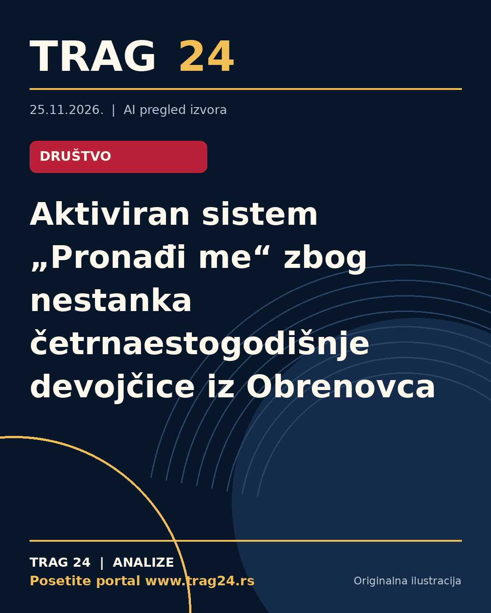

Aktiviran sistem „Pronađi me“ zbog nestanka četrnaestogodišnje devojčice iz Obrenovca

ŠTA SE DOGODILO
Četrnaestogodišnja Božica Ajeti nestala je 23. novembra 2026. godine oko 11 časova u Obrenovcu. Devojčica je tada napustila Osnovnu školu „Jovan Jovanović Zmaj“ u nepoznatom pravcu, što je prijavljeno nadležnim organima.
HRONOLOGIJA
Nestanak Božice Ajeti prijavljen je istog dana, 23. novembra, oko 11 časova. Odmah je aktiviran sistem „Pronađi me“, namenjen hitnom obaveštavanju javnosti radi prikupljanja informacija koje bi pomogle u pronalasku nestale osobe. Građani su pozvani da svaku korisnu informaciju prijave policiji na telefone 192 ili 064/89-23-414 / 064/8924059.
ŠTA NAVODE IZVORI
Svi izvori navode da je devojčica visine oko 160 cm, mršavije građe, svetlije puti, sa dugom crnom kosom i braon očima. U trenutku nestanka nosila je sivu jaknu, crnu duksericu, crne helanke i bordo patike. Ministarstvo unutrašnjih poslova i policija apelovali su na građane za pomoć u pronalaženju Božice. Redakcije napominju da komentari na društvenim mrežama treba da budu uvažljivi i usmereni na činjenice bez ličnih napada.
ŠTA JE POTVRĐENO
Potvrđeno je da je sistem „Pronađi me“ aktiviran kao hitna mera za pronalazak nestale devojčice. Policija je uključena u potragu i pružena su precizna opisna obeležja Božice Ajeti, dostupna javnosti. Brojevi telefona za prijavu informacija su javno objavljeni od strane policije. Nestanak se desio u okolini Obrenovca, što je jasno precizirano u svim izvorima.
ŠTA NIJE POTVRĐENO
Nema dostupnih podataka o razlozima nestanka, kretanju devojčice nakon udaljavanja iz škole, niti o drugim detaljima koji bi mogli dodatno objasniti okolnosti njene pojave ili potencijalne opasnosti. Takođe, nema informacija o eventualnom pronalasku ili statusu potrage do sada.
ŠTA OSTАJE OTVORENO: Ostaje nepoznato gde se trenutno nalazi Božica Ajeti i da li je bezbedna. Takođe nije potvrđeno da li je imala kontakt sa nekim od poznatih osoba, niti postoji zvanična informacija o daljem toku istrage ili eventualnim novim saznanjima. Javnost se poziva da ostane obaveštena i da pomogne policiji pružanjem informacija ukoliko ih ima.
Izvori
- https://vreme.com/vesti/aktiviran-sistem-pronadji-me-nestala-devojcica-u-obrenovcu/
- https://013info.rs/srbija/aktiviran-sistem-pronadji-me-zbog-nestanka-cetrnaestogodisnje-devojcice-iz-obrenovca/
- https://www.juznevesti.com/hronika/aktiviran-sistem-pronadji-me-nestala-14-godisnja-devojcica-iz-obrenovca/
Ova analiza je pripremljena uz pomoć veštačke inteligencije na osnovu javno dostupnih izvora. Navodi izvora nisu nužno nezavisno potvrđeni.